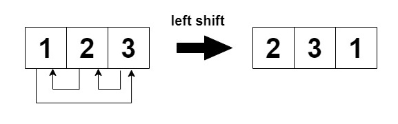
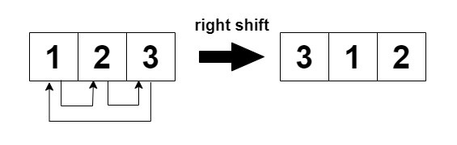
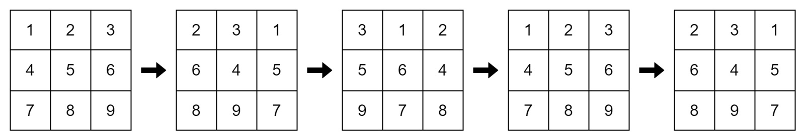
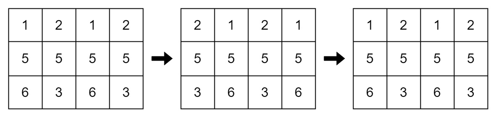

| Category | Difficulty | Likes | Dislikes |
|---|---|---|---|
| Algorithms | Easy | 192 | 68 |
array | math | matrix | simulation
salesforce
You are given an m x n integer matrix mat and an integer k. The matrix rows are 0-indexed.
The following proccess happens k times:


Return true if the final modified matrix after k steps is identical to the original matrix, and false otherwise.
Example 1:
Input: mat = [[1,2,3],[4,5,6],[7,8,9]], k = 4
Output: false
Explanation:
In each step left shift is applied to rows 0 and 2 (even indices), and right shift to row 1 (odd index).

Example 2:
Input: mat = [[1,2,1,2],[5,5,5,5],[6,3,6,3]], k = 2
Output: true
Explanation:

Example 3:
Input: mat = [[2,2],[2,2]], k = 3
Output: true
Explanation:
As all the values are equal in the matrix, even after performing cyclic shifts the matrix will remain the same.
Constraints:
1 <= mat.length <= 251 <= mat[i].length <= 251 <= mat[i][j] <= 251 <= k <= 50